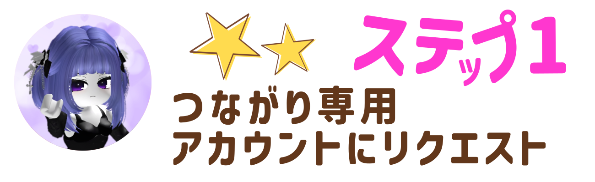
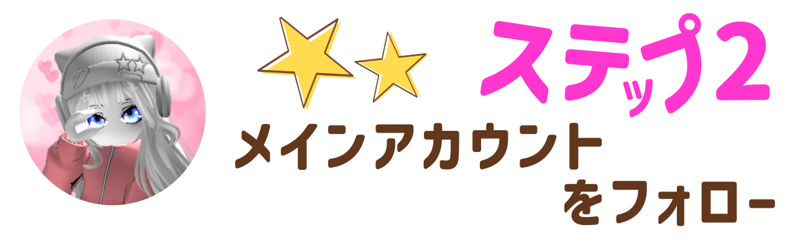
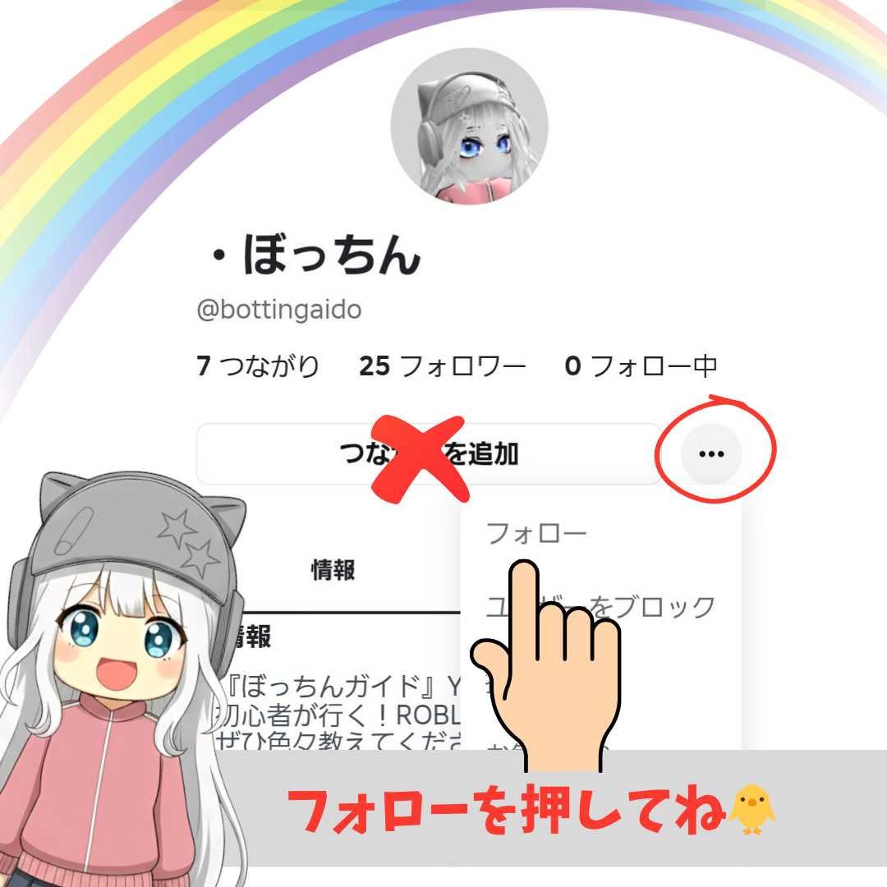
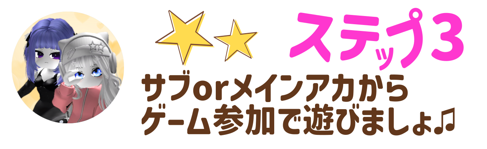
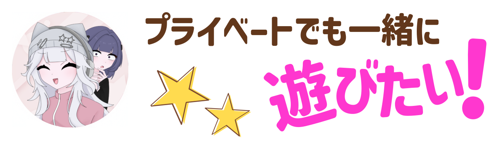
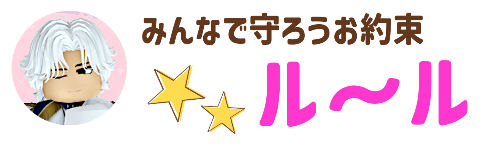

一緒にプレイするには
以下のステップを完了させてね🌠

1️⃣『ぼっちんガイドサブ・るみなだよ』
ロブロID→@bottin_gaidoまでつながりリクエストを送
ってね💙
2️⃣『ぼっちんガイドサブ・ひかりだよ』
ロブロID→@bottin_hikariまでつながりリクエストを送
ってね🐨

三点リーダーを押 してフォローをポチっ👆️参加の合図がくるのを待っててね♪

🚫つながりを追加は押 さないでね
どちらも完了させないと
プライベートサーバーに入れません。

募集がきたら【参加
】ボタンを押して一緒にプレイ🎵
※サブアカウントはプライベートサーバー立ち上げ後
は退室
する場合があります。

メインアカウント
『ぼっちん』とのつながりは
YouTubeメンバーシップ
or 期間限定です🐥

💬お話したい時は、 チャンネル内のライブ予告 『フリーチャット』を使用してね。
⛔他の参加者が不快になる 行為はしないでください。
⛔プレイ中のフレンド交換、 武器トレードなどのトラブルは 一切責任を負いません。
🎞️プレイ中の様子、 フォロワーさんのアバターを動画の一部に 使用（出演）させてもらう 場合があります。
※出演NGの方は メインアカウント（ぼっちん）へのフォローはしないようにお願いします。